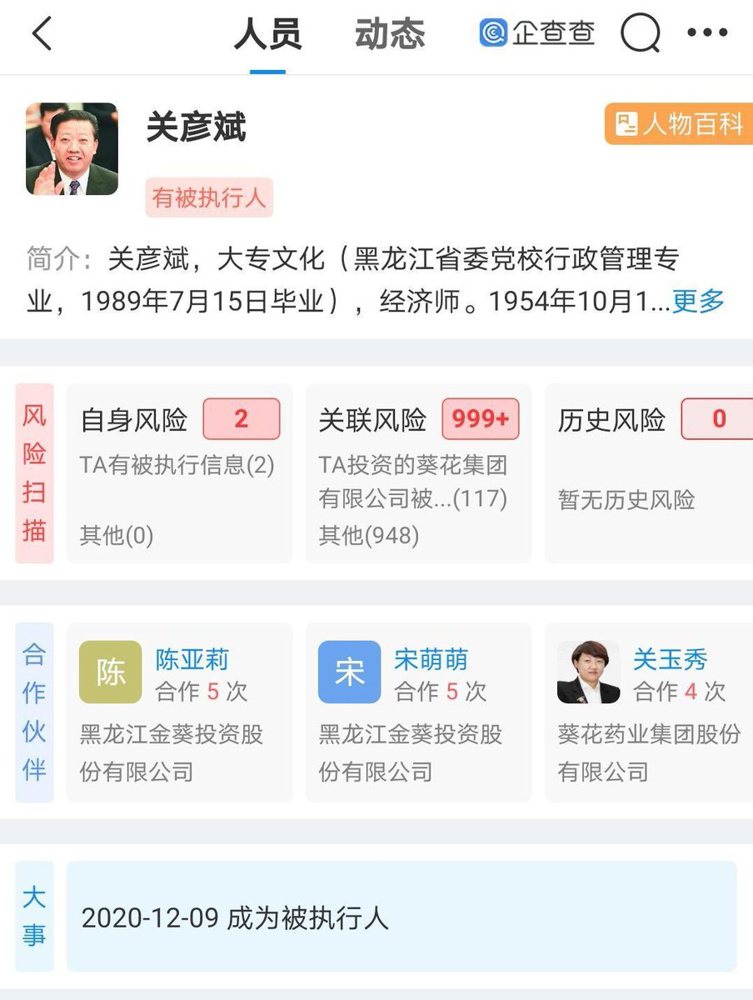

由依🍥
@youy1qwq
广告宣传语是“小葵花妈妈课堂开课啦”的葵花药业的创始人，给他前妻砍成植物人了…还是当着他们未成年儿子的面
而且葵花药业是关彦斌和前妻张晓兰共同创立，张晓兰曾放弃公职、借贷1500万助其东山再起，是公司核心创业功臣。
但是关彦斌东山再起之后就出轨了自己的女秘书，还生了两个孩子，而张晓兰只要求赔偿9亿，放弃股份，自己带着孩子出国。
因为孩子想回家看看爸爸，张晓兰就带着孩子回去见了一面，然后悲剧就发生了。关彦斌当着孩子的面对张晓兰连砍四刀。
关彦斌被判11年，而张晓兰至今未拿到全部补偿款。
